3 데이터 시각화
3.1 들어가기
“The simple graph has brought more information to the data analyst’s mind than any other device.” — John Tukey
This chapter will teach you how to visualise your data using ggplot2. R has several systems for making graphs, but ggplot2 is one of the most elegant and most versatile. ggplot2 implements the grammar of graphics, a coherent system for describing and building graphs. With ggplot2, you can do more faster by learning one system and applying it in many places.
If you’d like to learn more about the theoretical underpinnings of ggplot2 before you start, I’d recommend reading “The Layered Grammar of Graphics”, http://vita.had.co.nz/papers/layered-grammar.pdf.
3.1.1 준비하기
This chapter focusses on ggplot2, one of the core members of the tidyverse. To access the datasets, help pages, and functions that we will use in this chapter, load the tidyverse by running this code:
library(tidyverse)
#> ── Attaching packages ────────────────────────────────────────── tidyverse 1.2.1 ──
#> ✔ ggplot2 3.0.0 ✔ purrr 0.2.4
#> ✔ tibble 1.4.2 ✔ dplyr 0.7.4
#> ✔ tidyr 0.8.0 ✔ stringr 1.3.1
#> ✔ readr 1.1.1 ✔ forcats 0.3.0
#> ── Conflicts ───────────────────────────────────────────── tidyverse_conflicts() ──
#> ✖ dplyr::filter() masks stats::filter()
#> ✖ dplyr::lag() masks stats::lag()That one line of code loads the core tidyverse; packages which you will use in almost every data analysis. It also tells you which functions from the tidyverse conflict with functions in base R (or from other packages you might have loaded).
If you run this code and get the error message “there is no package called ‘tidyverse’”, you’ll need to first install it, then run library() once again.
install.packages("tidyverse")
library(tidyverse)You only need to install a package once, but you need to reload it every time you start a new session.
If we need to be explicit about where a function (or dataset) comes from, we’ll use the special form package::function(). For example, ggplot2::ggplot() tells you explicitly that we’re using the ggplot() function from the ggplot2 package.
3.2 First steps
Let’s use our first graph to answer a question: Do cars with big engines use more fuel than cars with small engines? You probably already have an answer, but try to make your answer precise. What does the relationship between engine size and fuel efficiency look like? Is it positive? Negative? Linear? Nonlinear?
3.2.1 mpg 데이터프레임
You can test your answer with the mpg 데이터프레임 found in ggplot2 (aka ggplot2::mpg). A data frame is a rectangular collection of variables (in the columns) and observations (in the rows). mpg contains observations collected by the US Environmental Protection Agency on 38 models of car.
mpg
#> # A tibble: 234 x 11
#> manufacturer model displ year cyl trans drv cty hwy fl class
#> <chr> <chr> <dbl> <int> <int> <chr> <chr> <int> <int> <chr> <chr>
#> 1 audi a4 1.8 1999 4 auto… f 18 29 p comp…
#> 2 audi a4 1.8 1999 4 manu… f 21 29 p comp…
#> 3 audi a4 2 2008 4 manu… f 20 31 p comp…
#> 4 audi a4 2 2008 4 auto… f 21 30 p comp…
#> 5 audi a4 2.8 1999 6 auto… f 16 26 p comp…
#> 6 audi a4 2.8 1999 6 manu… f 18 26 p comp…
#> # ... with 228 more rowsAmong the variables in mpg are:
displ, a car’s engine size, in litres.hwy, a car’s fuel efficiency on the highway, in miles per gallon (mpg). A car with a low fuel efficiency consumes more fuel than a car with a high fuel efficiency when they travel the same distance.
To learn more about mpg, open its help page by running ?mpg.
3.2.2 ggplot 생성하기
To plot mpg, run this code to put displ on the x-axis and hwy on the y-axis:
ggplot(data = mpg) +
geom_point(mapping = aes(x = displ, y = hwy))
The plot shows a negative relationship between engine size (displ) and fuel efficiency (hwy). In other words, cars with big engines use more fuel. Does this confirm or refute your hypothesis about fuel efficiency and engine size?
With ggplot2, you begin a plot with the function ggplot(). ggplot() creates a coordinate system that you can add layers to. The first argument of ggplot() is the dataset to use in the graph. So ggplot(data = mpg) creates an empty graph, but it’s not very interesting so I’m not going to show it here.
You complete your graph by adding one or more layers to ggplot(). The function geom_point() adds a layer of points to your plot, which creates a scatterplot. ggplot2 comes with many geom functions that each add a different type of layer to a plot. You’ll learn a whole bunch of them throughout this chapter.
Each geom function in ggplot2 takes a mapping argument. This defines how variables in your dataset are mapped to visual properties. The mapping argument is always paired with aes(), and the x and y arguments of aes() specify which variables to map to the x and y axes. ggplot2 looks for the mapped variables in the data argument, in this case, mpg.
3.2.3 A graphing template
Let’s turn this code into a reusable template for making graphs with ggplot2. To make a graph, replace the bracketed sections in the code below with a dataset, a geom function, or a collection of mappings.
ggplot(data = <DATA>) +
<GEOM_FUNCTION>(mapping = aes(<MAPPINGS>))The rest of this chapter will show you how to complete and extend this template to make different types of graphs. We will begin with the <MAPPINGS> component.
3.2.4 Exercises
Run
ggplot(data = mpg). What do you see?How many rows are in
mpg? How many columns?What does the
drvvariable describe? Read the help for?mpgto find out.Make a scatterplot of
hwyvscyl.What happens if you make a scatterplot of
classvsdrv? Why is the plot not useful?
3.3 Aesthetic mappings
“The greatest value of a picture is when it forces us to notice what we never expected to see.” — John Tukey
In the plot below, one group of points (highlighted in red) seems to fall outside of the linear trend. These cars have a higher mileage than you might expect. How can you explain these cars?
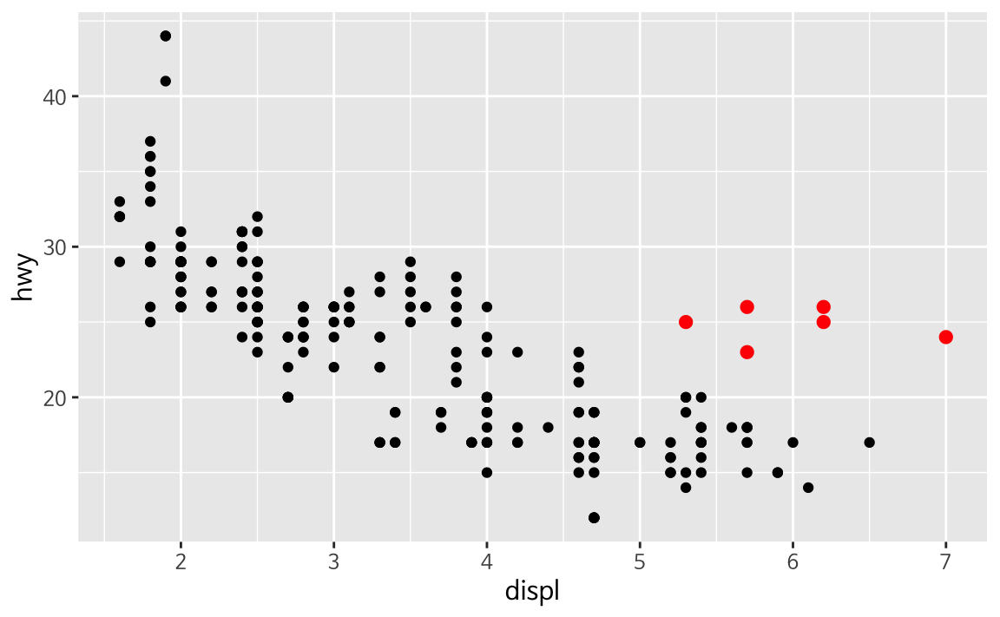
Let’s hypothesize that the cars are hybrids. One way to test this hypothesis is to look at the class value for each car. The class variable of the mpg dataset classifies cars into groups such as compact, midsize, and SUV. If the outlying points are hybrids, they should be classified as compact cars or, perhaps, subcompact cars (keep in mind that this data was collected before hybrid trucks and SUVs became popular).
You can add a third variable, like class, to a two dimensional scatterplot by mapping it to an aesthetic. An aesthetic is a visual property of the objects in your plot. Aesthetics include things like the size, the shape, or the color of your points. You can display a point (like the one below) in different ways by changing the values of its aesthetic properties. Since we already use the word “value” to describe data, let’s use the word “level” to describe aesthetic properties. Here we change the levels of a point’s size, shape, and color to make the point small, triangular, or blue:

You can convey information about your data by mapping the aesthetics in your plot to the variables in your dataset. For example, you can map the colors of your points to the class variable to reveal the class of each car.
ggplot(data = mpg) +
geom_point(mapping = aes(x = displ, y = hwy, color = class))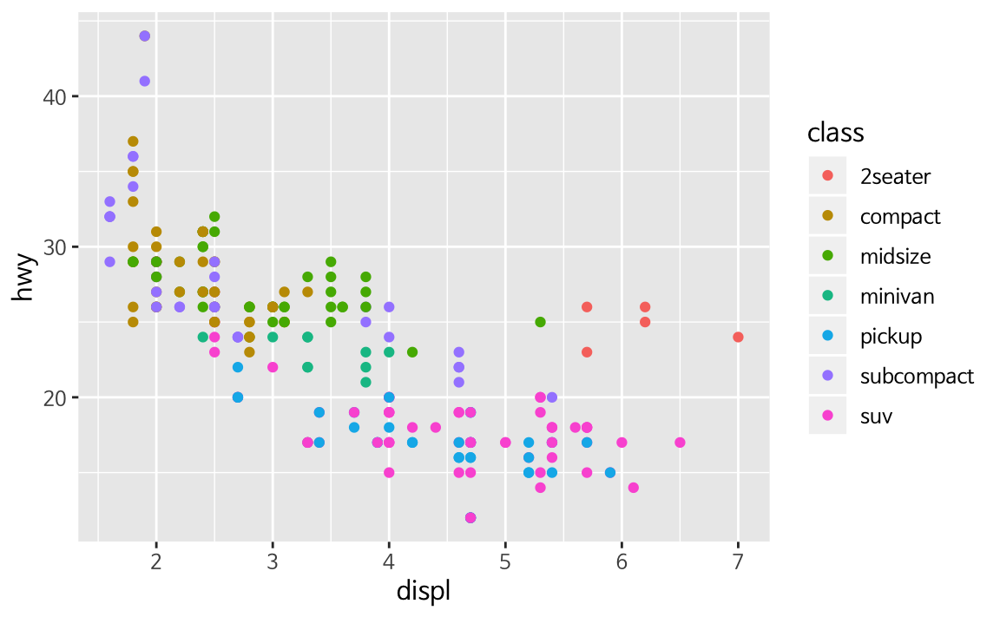
(If you prefer British English, like Hadley, you can use colour instead of color.)
To map an aesthetic to a variable, associate the name of the aesthetic to the name of the variable inside aes(). ggplot2 will automatically assign a unique level of the aesthetic (here a unique color) to each unique value of the variable, a process known as scaling. ggplot2 will also add a legend that explains which levels correspond to which values.
The colors reveal that many of the unusual points are two-seater cars. These cars don’t seem like hybrids, and are, in fact, sports cars! Sports cars have large engines like SUVs and pickup trucks, but small bodies like midsize and compact cars, which improves their gas mileage. In hindsight, these cars were unlikely to be hybrids since they have large engines.
In the above example, we mapped class to the color aesthetic, but we could have mapped class to the size aesthetic in the same way. In this case, the exact size of each point would reveal its class affiliation. We get a warning here, because mapping an unordered variable (class) to an ordered aesthetic (size) is not a good idea.
ggplot(data = mpg) +
geom_point(mapping = aes(x = displ, y = hwy, size = class))
#> Warning: Using size for a discrete variable is not advised.
Or we could have mapped class to the alpha aesthetic, which controls the transparency of the points, or to the shape aesthetic, which controls the shape of the points.
# Left
ggplot(data = mpg) +
geom_point(mapping = aes(x = displ, y = hwy, alpha = class))
# Right
ggplot(data = mpg) +
geom_point(mapping = aes(x = displ, y = hwy, shape = class)) 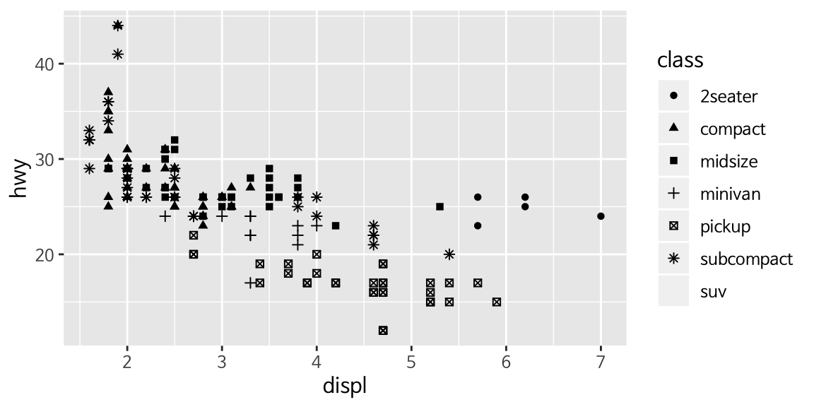
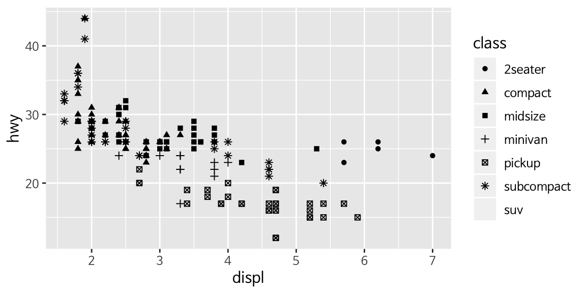
What happened to the SUVs? ggplot2 will only use six shapes at a time. By default, additional groups will go unplotted when you use the shape aesthetic.
For each aesthetic, you use aes() to associate the name of the aesthetic with a variable to display. The aes() function gathers together each of the aesthetic mappings used by a layer and passes them to the layer’s mapping argument. The syntax highlights a useful insight about x and y: the x and y locations of a point are themselves aesthetics, visual properties that you can map to variables to display information about the data.
Once you map an aesthetic, ggplot2 takes care of the rest. It selects a reasonable scale to use with the aesthetic, and it constructs a legend that explains the mapping between levels and values. For x and y aesthetics, ggplot2 does not create a legend, but it creates an axis line with tick marks and a label. The axis line acts as a legend; it explains the mapping between locations and values.
You can also set the aesthetic properties of your geom manually. For example, we can make all of the points in our plot blue:
ggplot(data = mpg) +
geom_point(mapping = aes(x = displ, y = hwy), color = "blue")
Here, the color doesn’t convey information about a variable, but only changes the appearance of the plot. To set an aesthetic manually, set the aesthetic by name as an argument of your geom function; i.e. it goes outside of aes(). You’ll need to pick a level that makes sense for that aesthetic:
The name of a color as a character string.
The size of a point in mm.
The shape of a point as a number, as shown in Figure 3.1.

Figure 3.1: R has 25 built in shapes that are identified by numbers. There are some seeming duplicates: for example, 0, 15, and 22 are all squares. The difference comes from the interaction of the colour and fill aesthetics. The hollow shapes (0–14) have a border determined by colour; the solid shapes (15–18) are filled with colour; the filled shapes (21–24) have a border of colour and are filled with fill.
3.3.1 Exercises
What’s gone wrong with this code? Why are the points not blue?
ggplot(data = mpg) + geom_point(mapping = aes(x = displ, y = hwy, color = "blue"))
Which variables in
mpgare categorical? Which variables are continuous? (Hint: type?mpgto read the documentation for the dataset). How can you see this information when you runmpg?Map a continuous variable to
color,size, andshape. How do these aesthetics behave differently for categorical vs. continuous variables?What happens if you map the same variable to multiple aesthetics?
What does the
strokeaesthetic do? What shapes does it work with? (Hint: use?geom_point)What happens if you map an aesthetic to something other than a variable name, like
aes(colour = displ < 5)? Note, you’ll also need to specify x and y.
3.4 Common problems
As you start to run R code, you’re likely to run into problems. Don’t worry — it happens to everyone. I have been writing R code for years, and every day I still write code that doesn’t work!
Start by carefully comparing the code that you’re running to the code in the book. R is extremely picky, and a misplaced character can make all the difference. Make sure that every ( is matched with a ) and every " is paired with another ". Sometimes you’ll run the code and nothing happens. Check the left-hand of your console: if it’s a +, it means that R doesn’t think you’ve typed a complete expression and it’s waiting for you to finish it. In this case, it’s usually easy to start from scratch again by pressing ESCAPE to abort processing the current command.
One common problem when creating ggplot2 graphics is to put the + in the wrong place: it has to come at the end of the line, not the start. In other words, make sure you haven’t accidentally written code like this:
ggplot(data = mpg)
+ geom_point(mapping = aes(x = displ, y = hwy))If you’re still stuck, try the help. You can get help about any R function by running ?function_name in the console, or selecting the function name and pressing F1 in RStudio. Don’t worry if the help doesn’t seem that helpful - instead skip down to the examples and look for code that matches what you’re trying to do.
If that doesn’t help, carefully read the error message. Sometimes the answer will be buried there! But when you’re new to R, the answer might be in the error message but you don’t yet know how to understand it. Another great tool is Google: try googling the error message, as it’s likely someone else has had the same problem, and has gotten help online.
3.5 Facets
One way to add additional variables is with aesthetics. Another way, particularly useful for categorical variables, is to split your plot into facets, subplots that each display one subset of the data.
To facet your plot by a single variable, use facet_wrap(). The first argument of facet_wrap() should be a formula, which you create with ~ followed by a variable name (here “formula” is the name of a data structure in R, not a synonym for “equation”). The variable that you pass to facet_wrap() should be discrete.
ggplot(data = mpg) +
geom_point(mapping = aes(x = displ, y = hwy)) +
facet_wrap(~ class, nrow = 2)
To facet your plot on the combination of two variables, add facet_grid() to your plot call. The first argument of facet_grid() is also a formula. This time the formula should contain two variable names separated by a ~.
ggplot(data = mpg) +
geom_point(mapping = aes(x = displ, y = hwy)) +
facet_grid(drv ~ cyl)
If you prefer to not facet in the rows or columns dimension, use a . instead of a variable name, e.g. + facet_grid(. ~ cyl).
3.5.1 Exercises
What happens if you facet on a continuous variable?
What do the empty cells in plot with
facet_grid(drv ~ cyl)mean? How do they relate to this plot?ggplot(data = mpg) + geom_point(mapping = aes(x = drv, y = cyl))What plots does the following code make? What does
.do?ggplot(data = mpg) + geom_point(mapping = aes(x = displ, y = hwy)) + facet_grid(drv ~ .) ggplot(data = mpg) + geom_point(mapping = aes(x = displ, y = hwy)) + facet_grid(. ~ cyl)Take the first faceted plot in this section:
ggplot(data = mpg) + geom_point(mapping = aes(x = displ, y = hwy)) + facet_wrap(~ class, nrow = 2)What are the advantages to using faceting instead of the colour aesthetic? What are the disadvantages? How might the balance change if you had a larger dataset?
Read
?facet_wrap. What doesnrowdo? What doesncoldo? What other options control the layout of the individual panels? Why doesn’tfacet_grid()havenrowandncolarguments?When using
facet_grid()you should usually put the variable with more unique levels in the columns. Why?
3.6 Geometric objects
How are these two plots similar?
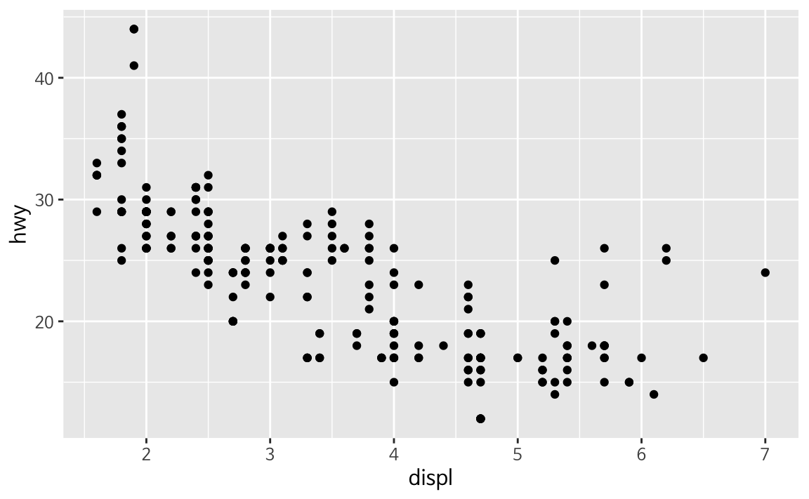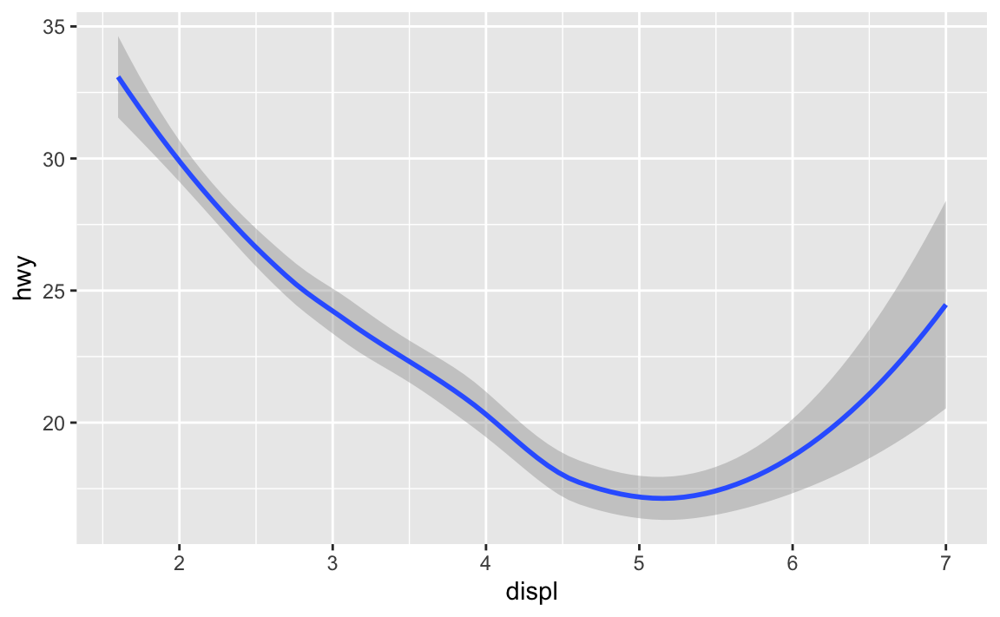
Both plots contain the same x variable, the same y variable, and both describe the same data. But the plots are not identical. Each plot uses a different visual object to represent the data. In ggplot2 syntax, we say that they use different geoms.
A geom is the geometrical object that a plot uses to represent data. People often describe plots by the type of geom that the plot uses. For example, bar charts use bar geoms, line charts use line geoms, boxplots use boxplot geoms, and so on. Scatterplots break the trend; they use the point geom. As we see above, you can use different geoms to plot the same data. The plot on the left uses the point geom, and the plot on the right uses the smooth geom, a smooth line fitted to the data.
To change the geom in your plot, change the geom function that you add to ggplot(). For instance, to make the plots above, you can use this code:
# left
ggplot(data = mpg) +
geom_point(mapping = aes(x = displ, y = hwy))
# right
ggplot(data = mpg) +
geom_smooth(mapping = aes(x = displ, y = hwy))Every geom function in ggplot2 takes a mapping argument. However, not every aesthetic works with every geom. You could set the shape of a point, but you couldn’t set the “shape” of a line. On the other hand, you could set the linetype of a line. geom_smooth() will draw a different line, with a different linetype, for each unique value of the variable that you map to linetype.
ggplot(data = mpg) +
geom_smooth(mapping = aes(x = displ, y = hwy, linetype = drv))
Here geom_smooth() separates the cars into three lines based on their drv value, which describes a car’s drivetrain. One line describes all of the points with a 4 value, one line describes all of the points with an f value, and one line describes all of the points with an r value. Here, 4 stands for four-wheel drive, f for front-wheel drive, and r for rear-wheel drive.
If this sounds strange, we can make it more clear by overlaying the lines on top of the raw data and then coloring everything according to drv.

Notice that this plot contains two geoms in the same graph! If this makes you excited, buckle up. We will learn how to place multiple geoms in the same plot very soon.
ggplot2 provides over 30 geoms, and extension packages provide even more (see https://www.ggplot2-exts.org for a sampling). The best way to get a comprehensive overview is the ggplot2 cheatsheet, which you can find at http://rstudio.com/cheatsheets. To learn more about any single geom, use help: ?geom_smooth.
Many geoms, like geom_smooth(), use a single geometric object to display multiple rows of data. For these geoms, you can set the group aesthetic to a categorical variable to draw multiple objects. ggplot2 will draw a separate object for each unique value of the grouping variable. In practice, ggplot2 will automatically group the data for these geoms whenever you map an aesthetic to a discrete variable (as in the linetype example). It is convenient to rely on this feature because the group aesthetic by itself does not add a legend or distinguishing features to the geoms.
ggplot(data = mpg) +
geom_smooth(mapping = aes(x = displ, y = hwy))
ggplot(data = mpg) +
geom_smooth(mapping = aes(x = displ, y = hwy, group = drv))
ggplot(data = mpg) +
geom_smooth(
mapping = aes(x = displ, y = hwy, color = drv),
show.legend = FALSE
)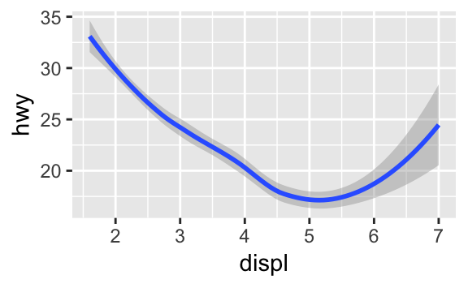 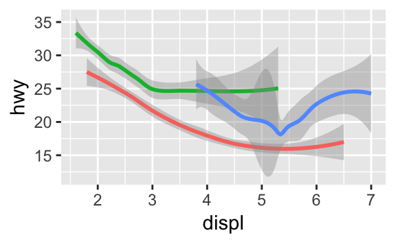
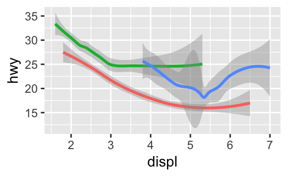
To display multiple geoms in the same plot, add multiple geom functions to ggplot():
ggplot(data = mpg) +
geom_point(mapping = aes(x = displ, y = hwy)) +
geom_smooth(mapping = aes(x = displ, y = hwy))
This, however, introduces some duplication in our code. Imagine if you wanted to change the y-axis to display cty instead of hwy. You’d need to change the variable in two places, and you might forget to update one. You can avoid this type of repetition by passing a set of mappings to ggplot(). ggplot2 will treat these mappings as global mappings that apply to each geom in the graph. In other words, this code will produce the same plot as the previous code:
ggplot(data = mpg, mapping = aes(x = displ, y = hwy)) +
geom_point() +
geom_smooth()If you place mappings in a geom function, ggplot2 will treat them as local mappings for the layer. It will use these mappings to extend or overwrite the global mappings for that layer only. This makes it possible to display different aesthetics in different layers.
ggplot(data = mpg, mapping = aes(x = displ, y = hwy)) +
geom_point(mapping = aes(color = class)) +
geom_smooth()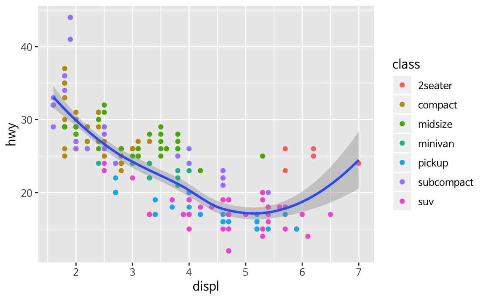
You can use the same idea to specify different data for each layer. Here, our smooth line displays just a subset of the mpg dataset, the subcompact cars. The local data argument in geom_smooth() overrides the global data argument in ggplot() for that layer only.
ggplot(data = mpg, mapping = aes(x = displ, y = hwy)) +
geom_point(mapping = aes(color = class)) +
geom_smooth(data = filter(mpg, class == "subcompact"), se = FALSE)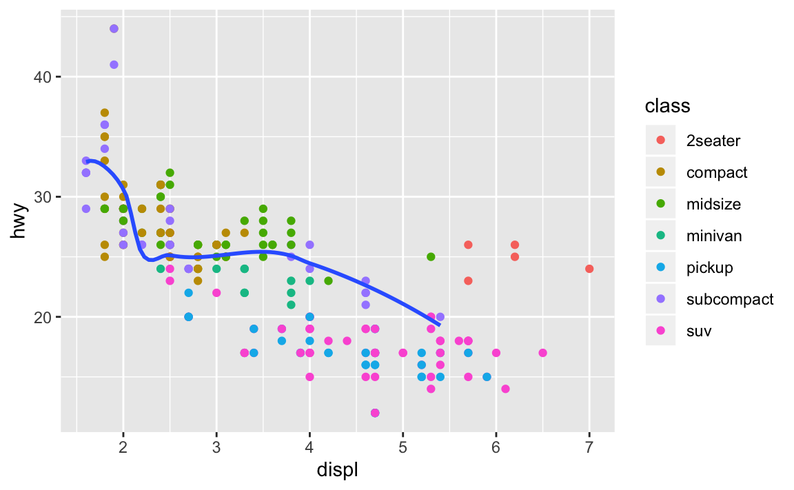
(You’ll learn how filter() works in the chapter on data transformations: for now, just know that this command selects only the subcompact cars.)
3.6.1 Exercises
What geom would you use to draw a line chart? A boxplot? A histogram? An area chart?
Run this code in your head and predict what the output will look like. Then, run the code in R and check your predictions.
ggplot(data = mpg, mapping = aes(x = displ, y = hwy, color = drv)) + geom_point() + geom_smooth(se = FALSE)What does
show.legend = FALSEdo? What happens if you remove it?
Why do you think I used it earlier in the chapter?What does the
seargument togeom_smooth()do?Will these two graphs look different? Why/why not?
ggplot(data = mpg, mapping = aes(x = displ, y = hwy)) + geom_point() + geom_smooth() ggplot() + geom_point(data = mpg, mapping = aes(x = displ, y = hwy)) + geom_smooth(data = mpg, mapping = aes(x = displ, y = hwy))Recreate the R code necessary to generate the following graphs.


3.7 Statistical transformations
Next, let’s take a look at a bar chart. Bar charts seem simple, but they are interesting because they reveal something subtle about plots. Consider a basic bar chart, as drawn with geom_bar(). The following chart displays the total number of diamonds in the diamonds dataset, grouped by cut. The diamonds dataset comes in ggplot2 and contains information about ~54,000 diamonds, including the price, carat, color, clarity, and cut of each diamond. The chart shows that more diamonds are available with high quality cuts than with low quality cuts.
ggplot(data = diamonds) +
geom_bar(mapping = aes(x = cut))
On the x-axis, the chart displays cut, a variable from diamonds. On the y-axis, it displays count, but count is not a variable in diamonds! Where does count come from? Many graphs, like scatterplots, plot the raw values of your dataset. Other graphs, like bar charts, calculate new values to plot:
bar charts, histograms, and frequency polygons bin your data and then plot bin counts, the number of points that fall in each bin.
smoothers fit a model to your data and then plot predictions from the model.
boxplots compute a robust summary of the distribution and then display a specially formatted box.
The algorithm used to calculate new values for a graph is called a stat, short for statistical transformation. The figure below describes how this process works with geom_bar().

You can learn which stat a geom uses by inspecting the default value for the stat argument. For example, ?geom_bar shows that the default value for stat is “count”, which means that geom_bar() uses stat_count(). stat_count() is documented on the same page as geom_bar(), and if you scroll down you can find a section called “Computed variables”. That describes how it computes two new variables: count and prop.
You can generally use geoms and stats interchangeably. For example, you can recreate the previous plot using stat_count() instead of geom_bar():
ggplot(data = diamonds) +
stat_count(mapping = aes(x = cut))
This works because every geom has a default stat; and every stat has a default geom. This means that you can typically use geoms without worrying about the underlying statistical transformation. There are three reasons you might need to use a stat explicitly:
You might want to override the default stat. In the code below, I change the stat of
geom_bar()from count (the default) to identity. This lets me map the height of the bars to the raw values of a \(y\) variable. Unfortunately when people talk about bar charts casually, they might be referring to this type of bar chart, where the height of the bar is already present in the data, or the previous bar chart where the height of the bar is generated by counting rows.demo <- tribble( ~cut, ~freq, "Fair", 1610, "Good", 4906, "Very Good", 12082, "Premium", 13791, "Ideal", 21551 ) ggplot(data = demo) + geom_bar(mapping = aes(x = cut, y = freq), stat = "identity")
(Don’t worry that you haven’t seen
<-ortribble()before. You might be able to guess at their meaning from the context, and you’ll learn exactly what they do soon!)You might want to override the default mapping from transformed variables to aesthetics. For example, you might want to display a bar chart of proportion, rather than count:
ggplot(data = diamonds) + geom_bar(mapping = aes(x = cut, y = ..prop.., group = 1))
To find the variables computed by the stat, look for the help section titled “computed variables”.
You might want to draw greater attention to the statistical transformation in your code. For example, you might use
stat_summary(), which summarises the y values for each unique x value, to draw attention to the summary that you’re computing:ggplot(data = diamonds) + stat_summary( mapping = aes(x = cut, y = depth), fun.ymin = min, fun.ymax = max, fun.y = median )
ggplot2 provides over 20 stats for you to use. Each stat is a function, so you can get help in the usual way, e.g. ?stat_bin. To see a complete list of stats, try the ggplot2 cheatsheet.
3.7.1 Exercises
What is the default geom associated with
stat_summary()? How could you rewrite the previous plot to use that geom function instead of the stat function?What does
geom_col()do? How is it different togeom_bar()?Most geoms and stats come in pairs that are almost always used in concert. Read through the documentation and make a list of all the pairs. What do they have in common?
What variables does
stat_smooth()compute? What parameters control its behaviour?In our proportion bar chart, we need to set
group = 1. Why? In other words what is the problem with these two graphs?ggplot(data = diamonds) + geom_bar(mapping = aes(x = cut, y = ..prop..)) ggplot(data = diamonds) + geom_bar(mapping = aes(x = cut, fill = color, y = ..prop..))
3.8 Position adjustments
There’s one more piece of magic associated with bar charts. You can colour a bar chart using either the colour aesthetic, or, more usefully, fill:
ggplot(data = diamonds) +
geom_bar(mapping = aes(x = cut, colour = cut))
ggplot(data = diamonds) +
geom_bar(mapping = aes(x = cut, fill = cut))

Note what happens if you map the fill aesthetic to another variable, like clarity: the bars are automatically stacked. Each colored rectangle represents a combination of cut and clarity.
ggplot(data = diamonds) +
geom_bar(mapping = aes(x = cut, fill = clarity))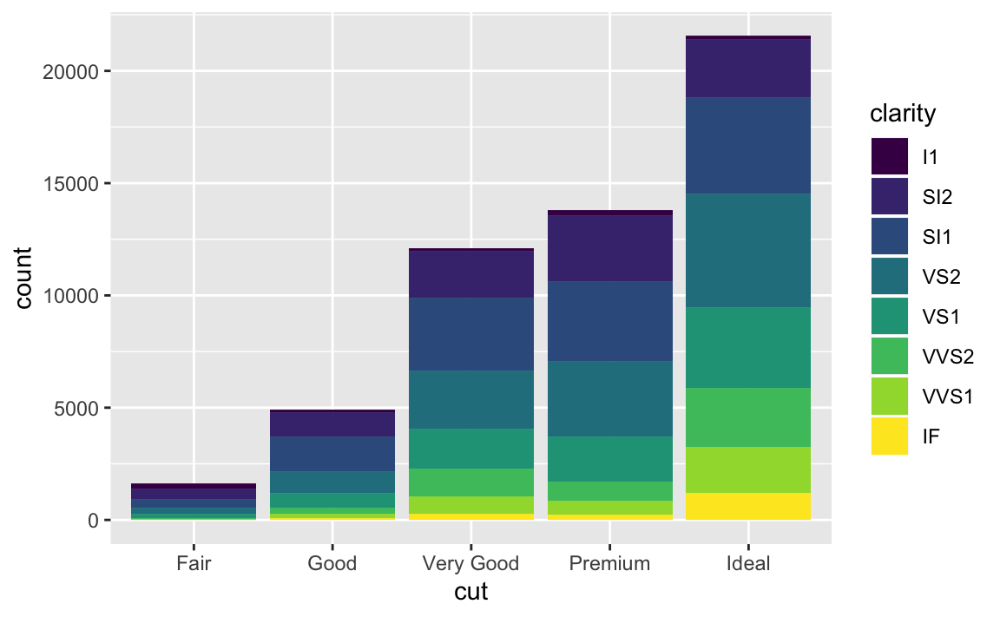
The stacking is performed automatically by the position adjustment specified by the position argument. If you don’t want a stacked bar chart, you can use one of three other options: "identity", "dodge" or "fill".
position = "identity"will place each object exactly where it falls in the context of the graph. This is not very useful for bars, because it overlaps them. To see that overlapping we either need to make the bars slightly transparent by settingalphato a small value, or completely transparent by settingfill = NA.ggplot(data = diamonds, mapping = aes(x = cut, fill = clarity)) + geom_bar(alpha = 1/5, position = "identity") ggplot(data = diamonds, mapping = aes(x = cut, colour = clarity)) + geom_bar(fill = NA, position = "identity")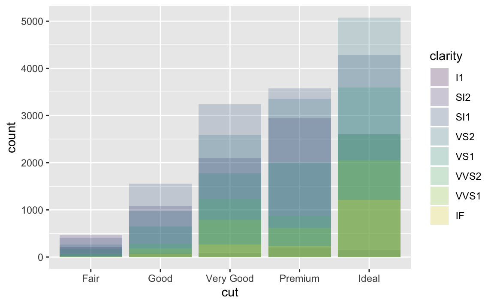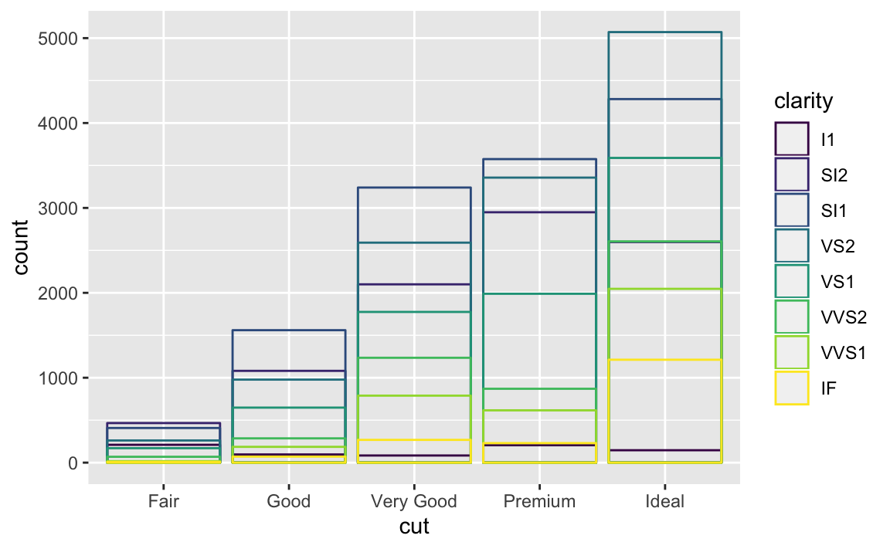
The identity position adjustment is more useful for 2d geoms, like points, where it is the default.
position = "fill"works like stacking, but makes each set of stacked bars the same height. This makes it easier to compare proportions across groups.ggplot(data = diamonds) + geom_bar(mapping = aes(x = cut, fill = clarity), position = "fill")
position = "dodge"places overlapping objects directly beside one another. This makes it easier to compare individual values.ggplot(data = diamonds) + geom_bar(mapping = aes(x = cut, fill = clarity), position = "dodge")
There’s one other type of adjustment that’s not useful for bar charts, but it can be very useful for scatterplots. Recall our first scatterplot. Did you notice that the plot displays only 126 points, even though there are 234 observations in the dataset?

The values of hwy and displ are rounded so the points appear on a grid and many points overlap each other. This problem is known as overplotting. This arrangement makes it hard to see where the mass of the data is. Are the data points spread equally throughout the graph, or is there one special combination of hwy and displ that contains 109 values?
You can avoid this gridding by setting the position adjustment to “jitter”. position = "jitter" adds a small amount of random noise to each point. This spreads the points out because no two points are likely to receive the same amount of random noise.
ggplot(data = mpg) +
geom_point(mapping = aes(x = displ, y = hwy), position = "jitter")
Adding randomness seems like a strange way to improve your plot, but while it makes your graph less accurate at small scales, it makes your graph more revealing at large scales. Because this is such a useful operation, ggplot2 comes with a shorthand for geom_point(position = "jitter"): geom_jitter().
To learn more about a position adjustment, look up the help page associated with each adjustment: ?position_dodge, ?position_fill, ?position_identity, ?position_jitter, and ?position_stack.
3.8.1 Exercises
What is the problem with this plot? How could you improve it?
ggplot(data = mpg, mapping = aes(x = cty, y = hwy)) + geom_point()
What parameters to
geom_jitter()control the amount of jittering?Compare and contrast
geom_jitter()withgeom_count().What’s the default position adjustment for
geom_boxplot()? Create a visualisation of thempgdataset that demonstrates it.
3.9 Coordinate systems
Coordinate systems are probably the most complicated part of ggplot2. The default coordinate system is the Cartesian coordinate system where the x and y positions act independently to determine the location of each point. There are a number of other coordinate systems that are occasionally helpful.
coord_flip()switches the x and y axes. This is useful (for example), if you want horizontal boxplots. It’s also useful for long labels: it’s hard to get them to fit without overlapping on the x-axis.ggplot(data = mpg, mapping = aes(x = class, y = hwy)) + geom_boxplot() ggplot(data = mpg, mapping = aes(x = class, y = hwy)) + geom_boxplot() + coord_flip()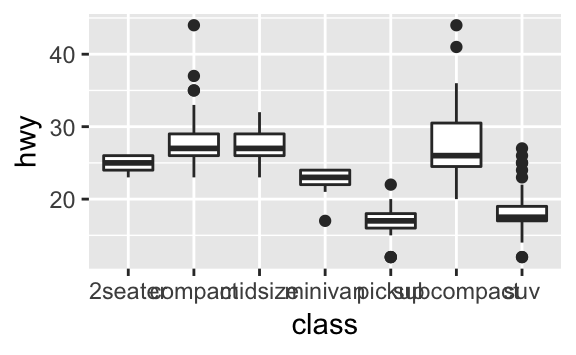

coord_quickmap()sets the aspect ratio correctly for maps. This is very important if you’re plotting spatial data with ggplot2 (which unfortunately we don’t have the space to cover in this book).nz <- map_data("nz") ggplot(nz, aes(long, lat, group = group)) + geom_polygon(fill = "white", colour = "black") ggplot(nz, aes(long, lat, group = group)) + geom_polygon(fill = "white", colour = "black") + coord_quickmap()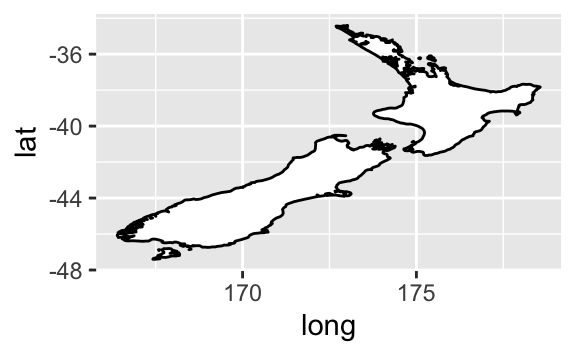

coord_polar()uses polar coordinates. Polar coordinates reveal an interesting connection between a bar chart and a Coxcomb chart.bar <- ggplot(data = diamonds) + geom_bar( mapping = aes(x = cut, fill = cut), show.legend = FALSE, width = 1 ) + theme(aspect.ratio = 1) + labs(x = NULL, y = NULL) bar + coord_flip() bar + coord_polar() 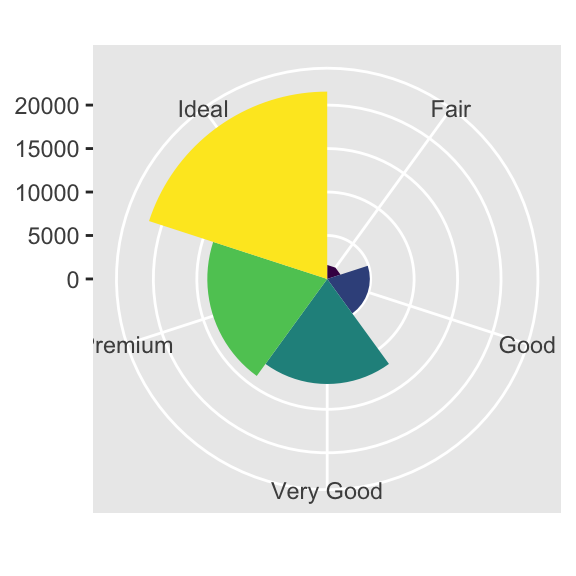
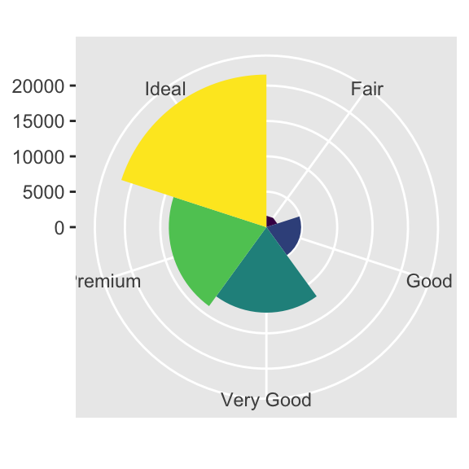
3.9.1 Exercises
Turn a stacked bar chart into a pie chart using
coord_polar().What does
labs()do? Read the documentation.What’s the difference between
coord_quickmap()andcoord_map()?What does the plot below tell you about the relationship between city and highway mpg? Why is
coord_fixed()important? What doesgeom_abline()do?ggplot(data = mpg, mapping = aes(x = cty, y = hwy)) + geom_point() + geom_abline() + coord_fixed()
3.10 The layered grammar of graphics
In the previous sections, you learned much more than how to make scatterplots, bar charts, and boxplots. You learned a foundation that you can use to make any type of plot with ggplot2. To see this, let’s add position adjustments, stats, coordinate systems, and faceting to our code template:
ggplot(data = <DATA>) +
<GEOM_FUNCTION>(
mapping = aes(<MAPPINGS>),
stat = <STAT>,
position = <POSITION>
) +
<COORDINATE_FUNCTION> +
<FACET_FUNCTION>Our new template takes seven parameters, the bracketed words that appear in the template. In practice, you rarely need to supply all seven parameters to make a graph because ggplot2 will provide useful defaults for everything except the data, the mappings, and the geom function.
The seven parameters in the template compose the grammar of graphics, a formal system for building plots. The grammar of graphics is based on the insight that you can uniquely describe any plot as a combination of a dataset, a geom, a set of mappings, a stat, a position adjustment, a coordinate system, and a faceting scheme.
To see how this works, consider how you could build a basic plot from scratch: you could start with a dataset and then transform it into the information that you want to display (with a stat).

Next, you could choose a geometric object to represent each observation in the transformed data. You could then use the aesthetic properties of the geoms to represent variables in the data. You would map the values of each variable to the levels of an aesthetic.

You’d then select a coordinate system to place the geoms into. You’d use the location of the objects (which is itself an aesthetic property) to display the values of the x and y variables. At that point, you would have a complete graph, but you could further adjust the positions of the geoms within the coordinate system (a position adjustment) or split the graph into subplots (faceting). You could also extend the plot by adding one or more additional layers, where each additional layer uses a dataset, a geom, a set of mappings, a stat, and a position adjustment.

You could use this method to build any plot that you imagine. In other words, you can use the code template that you’ve learned in this chapter to build hundreds of thousands of unique plots.